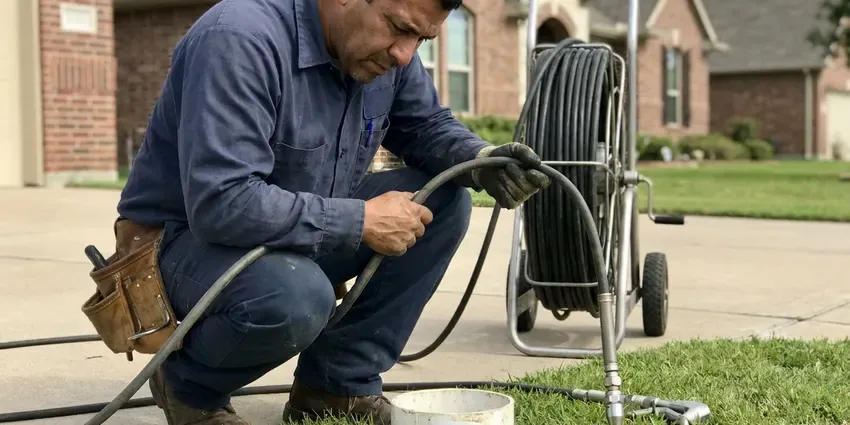

Water Damage Restoration in Laconia, NH
Water damage spreads fast. We respond quickly in Laconia, NH to fix the source, dry your home and help prevent mold.
- Insurance Documentation Support
- Nights and Weekends
- LGR Dehumidifiers
- Rapid Emergency Water Response

Water on the Floor in Laconia, NH? Call Now.
Every hour of standing water means more material to tear out. Call and we will send a crew.
Start-to-Finish Water Damage Restoration in Laconia, NH
FVR Plumbing restores water damage for homeowners across Laconia, NH, from a dishwasher leak under the cabinets to a burst line in the attic. Our crews pull the standing water, remove what will not dry in place, and keep the dehumidifiers going until the meters read normal. Most jobs dry in days.
Our expertise includes:
- Fast water extraction
- Flood cuts and wall cavity drying
- Structural drying and dehumidification

Additional Plumbing Maintenance Services in Laconia, NH
Our maintenance and specialty plumbing services in Laconia, NH catch small problems before they become emergencies.


Customers
Why Choose FVR Plumbing for Water Damage Restoration in Laconia, NH?
Water damage in New Hampshire homes behaves differently depending on the foundation, the wall type and the time of year. Concrete slabs hold water for days, and crawl spaces dry at a pace set by the vapor barrier and ventilation. We plan for both.
- Pro-Grade Equipment, Truck-mounted extractors, LGR dehumidifiers and axial fans for cavity drying.
- Source Repaired, Our plumbers fix the leak on the first visit so drying can begin.
- Preventive Advice, We tell you what failed and what keeps it from happening again.
Citywide Coverage
Every neighborhood in Laconia is in our service area, from older homes with plaster walls to newer slab homes. Wall and floor types change the drying plan. Every truck carries enough equipment to begin drying a two-room job as soon as extraction ends.
Experienced Team
Each technician has worked many water damage jobs and knows how materials react. Laminate swells for good, hardwood often dries under mats, and particleboard cabinets rarely survive. You get the straight answer.
Safety-First Approach
Removed materials are disposed of properly, and rebuild work follows local building and plumbing codes. Permits are pulled for repairs that require them, and we schedule the inspections so the work is signed off before you close the claim. Paperwork stays clean.
Trusted Certified Laconia Plumbing Services Professionals
At FVR Plumbing, we take pride in licensed, certified plumbing services throughout Laconia, NH. Those papers on the wall mean something. Our plumbers hold recognized industry credentials, and they follow strict safety and quality rules on every repair, installation and maintenance call we run.
Call Us Now PHCC Plumbing Contractor Recognition
PHCC Plumbing Contractor Recognition Better Business Bureau (BBB) Accreditation
Better Business Bureau (BBB) Accreditation Angi Certified Pro
Angi Certified Pro ISO 9001 Quality Management Certification
ISO 9001 Quality Management CertificationExtraction to Rebuild Water Damage Service in Laconia, NH
Kitchen and Appliance Leak Restoration in Laconia
Dishwashers, ice maker lines and sink supply lines can leak slowly under cabinets for weeks. By the time you notice a soft spot or a musty smell, the cabinet bases and subfloor may already be swollen and stained. Toe kicks come off first. That opening lets us blow dry air under the cabinets without tearing them out.

Mold Prevention After Water Damage in Laconia, NH
Mold can begin growing on damp drywall and wood within 24 to 48 hours. Even in dry weather, wall cavities and the space under cabinets stay damp for days without fans and dehumidifiers pushing air through them. Readings get logged every day. We treat wet areas as needed.
Structural Drying and Dehumidification in Laconia, NH
Air movers push dry air across wet surfaces, and dehumidifiers pull the moisture out of that air. We use low-grain refrigerant units for most jobs and desiccant units for cold spaces or dense materials like hardwood and concrete. Readings come daily. Your Laconia, NH home stays on equipment until the framing and subfloor match a dry reference.
Burst Pipe Water Damage in Laconia
Burst supply lines can release gallons per minute and soak several rooms quickly. We shut off the main, repair the pipe and start extraction right away, often within the same hour the crew arrives at your home. Wet drywall gets cut. We cut a foot above the water line, then dry the cavities, framing and floors.
Insurance Claim Assistance in Laconia, NH
Adjusters want proof of what was wet, how wet and for how long. We photograph the damage before we touch it, log moisture readings by location every day, and write an itemized scope that matches how insurers price restoration work. Copies go to you. We do not file the claim for you, but we can talk with your adjuster in Laconia, NH about what we found.
Emergency Water Extraction in Laconia
Standing water comes out first, before any drying starts. We use truck-mounted or portable extractors on carpet and pad, and submersible pumps where water is more than an inch or two deep on a hard floor. It goes quickly. Every gallon we pull out in Laconia is a gallon the dehumidifiers do not have to pull from the air later.
Foundation Water Damage Mitigation in Laconia, NH
Water pooling against a slab or soaking a crawl space can move soil and stress the structure. Rocky glacial soil and shallow ledge are common in New Hampshire, which can make digging for sewer and water lines slow and expensive. We extract and dry what we can reach, then look at where the water came from, whether it was a plumbing leak, a downspout dumping at the wall or grading that slopes toward the house. The source gets addressed.

Water Damage Restoration Costs and Insurance in Laconia, NH
Restoration costs depend on how much area is affected, the water category and how long materials stayed wet. Catching one bathroom early costs far less than a full floor where carpet, drywall and cabinets have to go. Timing changes the bill. Many homeowners policies cover sudden damage but not long-term leaks.
Water Damage Restoration Near Me in Laconia, NH
Looking for water damage help near you in Laconia, NH? FVR Plumbing has plumbers and restoration techs working out of the same local shop. One call covers both. Leak repair and extraction happen at the same time, instead of one company waiting on another.
Nearby crews also mean easy return visits. We return daily during drying to read moisture and shift equipment as areas finish. Those visits are quick. Being close keeps them on schedule in Laconia.
FVR Plumbing at a Glance
- Fully licensed plumbing team covering Laconia, NH
- 24/7 emergency service with same-day scheduling
- Upfront, flat-rate pricing before work begins
- 4.9-star rated by 840+ New Hampshire customers
Laconia Map
Laconia Information
- Population
- 17,142
- Area codes
- Local
- Service area
- Laconia and communities within 40 miles
- Nearby
- Concord, Rochester, Somersworth, Lebanon
Water wicks up drywall about an inch an hour after a leak, so in Laconia, NH the first day of drying decides how much gets torn out.
Talk to a Plumber
Reach out to FVR Plumbing for honest, reliable plumbing from people who know the trade in Laconia, NH.
Our Specialized Plumbing Services in Laconia, NH
At FVR Plumbing, we handle the full list of plumbing services across Laconia, NH. From leak detection to full system installs, our team works fast and charges fair prices on homes and commercial properties alike. Explore our core services below:


How Water Damage Restoration Works in Laconia, NH
From the first call to the last reading, here is what happens in Laconia.
Call for Help
Call (844) 442-1569 when you find water. We send a team to your Laconia property fast.
Assess
Technicians find the source and map wet areas with moisture meters and a infrared camera.
Extract
Commercial extractors remove standing water, which cuts drying time.
Frequently Asked Questions About Water Damage Restoration in Laconia
Costs in Laconia depend on the size of the area, the water category and how long it sat. A small clean water leak caught early might run $1,500 to $4,000, while a sewage backup that needs drywall, flooring and cabinets replaced can pass $10,000. Fast response lowers it. We quote after the walk-through.
Musty smells, peeling paint and stained drywall are the usual clues. Cupped floors, loose baseboards or an unexplained jump in the water bill can also mean a hidden leak. Have it checked soon.
Yes. Our plumbing repairs and rebuild work carry a workmanship warranty. Details are in your written estimate.
Minor jobs can wrap up in 2 to 3 days. Bigger losses that need demolition, several days of drying and a full rebuild can take several weeks from the first call to the final coat of paint. We give a timeline.
We take calls 24/7, and our goal is to be at your Laconia property within a few hours. Most of the time, the crew arrives faster than that, especially for active leaks where water is still running across the floor. Close the main valve.
Many policies cover sudden damage, such as a burst pipe or failed water heater. Slow leaks, neglect and outside flooding are often excluded, so check the exclusions first. Report it promptly.
Small spills on a hard floor, yes. Once water reaches drywall, pad or subfloor, house fans only dry the surface and leave moisture trapped below. Hidden water grows mold.
Surface spills, sure. Wall cavities and subfloors need commercial equipment and meters, and sewage needs protective gear. Mold is the risk.
What People Are Saying About Our Plumbing Experts?

Angela D.
Our sump pump quit during a storm and the water was an inch from the basement carpet. FVR Plumbing put in a new pump with a battery backup that same evening. We have had two heavy rains since. It kicked on both times.
Sump Pump · Lebanon, NH
Kevin O.
Before buying our house I paid for a sewer camera inspection. FVR Plumbing found a belly in the line that held standing water about forty feet from the cleanout. We used the video to get the sellers to fix it before closing.
Sewer Camera Inspection · Dover, NH
Emily R.
The shutoff valve under our kitchen sink snapped off in my hand on a Sunday morning. FVR Plumbing had someone out by early afternoon. He replaced both angle stops with quarter turn valves and showed me where our main shutoff was, which I honestly did not know.
Plumbing Repair · Rochester, NH
Carlos V.
Our house still had galvanized pipe, and upstairs the shower was a trickle. The crew repiped everything in PEX over three days and patched every drywall hole before they left. The pressure difference is night and day.
Repiping · Dover, NHDaniel K.
A pipe burst in the garage ceiling at 11 at night. Someone answered on the second ring, and the plumber was in my driveway about fifty minutes later. He shut off the main, cut out the split section, and had water back on before 2 am.
Emergency Plumbing · Manchester, NH
Greg S.
I manage a small strip center with six tenants. FVR Plumbing handles our annual backflow testing and fixed a recurring clog in the shared sewer line that had been backing into the nail salon. Their reports come in clean and on time.
Commercial Plumbing · Lebanon, NH